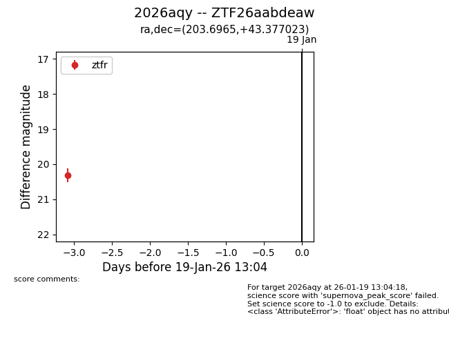
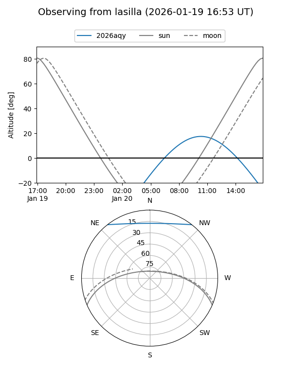
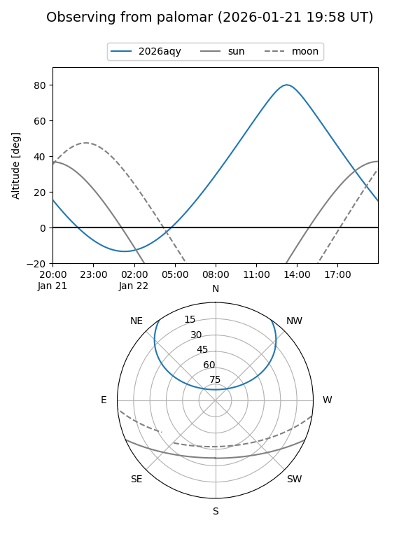

2026aqy
Target 2026aqy at 2026-01-22 12:16
Aliases and brokers:
FINK: link
Lasair: link
ALeRCE: link
TNS: link
YSE: link
alt names
ZTF26aabdeaw (ztf,fink_ztf)
2026aqy (tns,yse)
Coordinates:
equatorial (ra, dec) = 203.6965,+43.37702
equatorial (HMS+DMS) = 13:34:47.17,+43:22:37.28
galactic (l, b) = (97.3701,+71.53533)
Flags:
Photometry:
last ztfr=20.30
2 ztfr detections
Lightcurve

Visibility


Additional plots